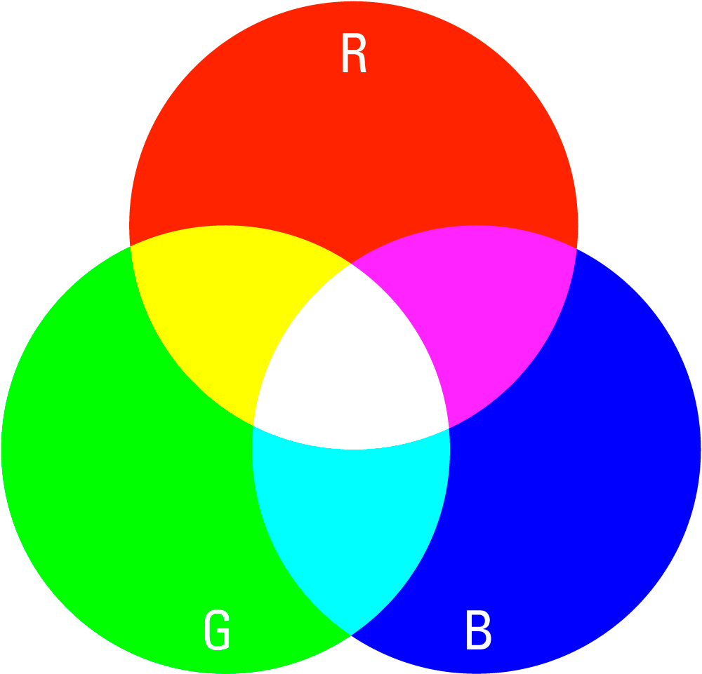

Наши глаза по-разному воспринимают прямой и отражённый цвет. Экран монитора излучает свет. А все окружающие нас предметы, в том числе и напечатанные изображения, этот свет отражают. Для человека прямой свет всегда ярче, чем отражённый. Чтобы описать прямой и отражённый цвет используют цветовые модели.
RGB - это цветовая модель, с помощью которой формируется изображение на экране монитора. Любая цифровая фотография или рисунок состоят из огромного количества оттенков. Но все они получены путём смешивания красного, зелёного и синего цветов в разных пропорциях.
CMYK - это цветовая модель, с помощью которой формируется отпечатанное изображение. CMYK - это сокращение от Cyan, Magenta, Yellow, Key color или голубой, пурпурный, жёлтый и чёрный. Именно эти цвета лежат в основе модели. Это значит что, фотография на бумаге, ткани или другом запечатываемом материале состоит уже из голубого, пурпурного, жёлтого и чёрного цветов.
Основное отличие между CMYK и RGB в том, что модель RGB - это прямые или излучаемые цвета, в то время как модель CMYK — цвета отражаемые. Поэтому электронные изображения состоят из оттенков, созданных на основе RGB модели. А все материалы для печати - это поверхности, которые отражают свет. Таким образом, отпечатанное изображение формируется при помощи CMYK модели.

В принтерах обычно используются четыре краски: голубая, пурпурная, жёлтая и чёрная, которые лежат в основе палитры CMYK. И чтобы перенести цифровое изображение на материал, необходимо перевести его из одной цветовой модели в другую. Иначе какие-то оттенки могут исказиться до неузнаваемости, и яркие цвета скорее всего потускнеют. Также важно помнить, что диапазон оттенков в модели CMYK меньше, чем в модели RGB. Поэтому любые изображения, подготовленные для макета, требуют цветокоррекции перед печатью.
Вывод: главное помнить, что RGB используется для электронных изображений на экране, а CMYK для печати на бумаге.